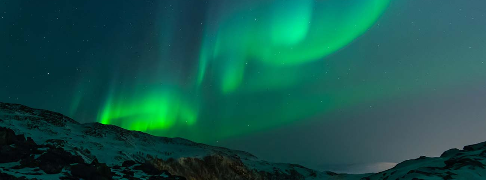

The road ahead might be paved - it might not be.
Dark spruce forest frowned on either side the frozen waterway. The trees had been stripped by a recent wind of their white covering of frost, and they seemed to lean towards each other, black and ominous, in the fading light. A vast silence reigned over the land. The land itself was a desolation, lifeless, without movement, so lone and cold that the spirit of it was not even that of sadness. There was a hint in it of laughter, but of a laughter more terrible than any sadness—a laughter that was mirthless as the smile of the sphinx, a laughter cold as the frost and partaking of the grimness of infallibility. It was the masterful and incommunicable wisdom of eternity laughing at the futility of life and the effort of life. It was the Wild, the savage, frozen-hearted Northland Wild. But there was life, abroad in the land and defiant. Down the frozen waterway toiled a string of wolfish dogs. Their bristly fur was rimed with frost. Their breath froze in the air as it left their mouths, spouting forth in spumes of vapour that settled upon the hair of their bodies and formed into crystals of frost. Leather harness was on the dogs, and leather traces attached them to a sled which dragged along behind. The sled was without runners. It was made of stout birch-bark, and its full surface rested on the snow. The front end of the sled was turned up, like a scroll, in order to force down and under the bore of soft snow that surged like a wave before it. On the sled, securely lashed, was a long and narrow oblong box. There were other things on the sled—blankets, an axe, and a coffee-pot and frying-pan; but prominent, occupying most of the space, was the long and narrow oblong box. In advance of the dogs, on wide snowshoes, toiled a man. At the rear of the sled toiled a second man. On the sled, in the box, lay a third man whose toil was over,—a man whom the Wild had conquered and beaten down until he would never move nor struggle again. It is not the way of the Wild to like movement. Life is an offence to it, for life is movement; and the Wild aims always to destroy movement. It freezes the water to prevent it running to the sea; it drives the sap out of the trees till they are frozen to their mighty hearts; and most ferociously and terribly of all does the Wild harry and crush into submission man—man who is the most restless of life, ever in revolt against the dictum that all movement must in the end come to the cessation of movement. But at front and rear, unawed and indomitable, toiled the two men who were not yet dead. Their bodies were covered with fur and soft-tanned leather. Eyelashes and cheeks and lips were so coated with the crystals from their frozen breath that their faces were not discernible. This gave them the seeming of ghostly masques, undertakers in a spectral world at the funeral of some ghost. But under it all they were men, penetrating the land of desolation and mockery and silence, puny adventurers bent on colossal adventure, pitting themselves against the might of a world as remote and alien and pulseless as the abysses of space.